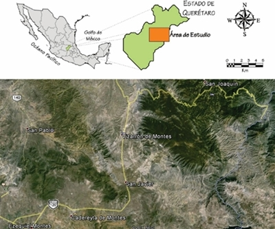

Sierra Gorda de Querétaro y Peña de Bernal, Querétaro
1. INTRODUCCIÓN
La geología de México es una expresión clara de la tectónica y sus consecuencias, desde las unidades más antiguas reportadas hasta los límites tectónicos actuales. En diversas regiones del país es posible apreciar la evolución cortical de distintos periodos geológicos, tal es el caso de la región que comprende la Sierra Gorda de Querétaro.
En esta práctica de campo se visitarán regiones y afloramientos clave que han permitido conocer parte de la evolución tectónica del centro de México desde el Jurásico-Triásico hasta el Mioceno (Fitz-Díaz et al., 2018). En el recorrido se visitarán afloramientos del complejo El Chilar, Fm. San Juan de la Rosa, Fm. Peña Azul, Fm. Soyatal, Fm. Tamaulipas, Fm. Trancas y el domo riolítico de la Peña de Bernal. Cabe mencionar que dichas unidades geológicas presentan relaciones de contacto que son expresiones claras de la actividad tectónica en distintos periodos, lo que permitirá desarrollar una dinámica de aprendizaje a partir de observar las rocas y sus estructuras en el afloramiento hasta su asociación a gran escala.
La práctica se realizará durante 3 días, del 27 al 28 de febrero de 2020, en las inmediaciones de los poblados principales de Cadereyta de Montes, San Joaquín y Bernal, Querétaro (Figura 1). El acceso al área de la práctica se logra tomando, desde Ciudad Universitaria, el periférico hasta la autopista a Querétaro y desviándose en San Juan del Río hacia Ezequiel Montes, y finalmente con desviación rumbo a Cadereyta, Qro. Asimismo, visitando por carretera, hacia el norte, los poblados de San José de la Rosa, El Jabalí y El Terrero. Posteriormente, el día siguiente el traslado es por la carretera Federal No. 120 hacia San Joaquín, visitando algunos afloramientos sobre carretera y en las inmediaciones del poblado El Doctor. Y al finalizar la práctica, la ruta de regreso será tomando la carretera Federal No. 120 de San Joaquín a Bernal y ulteriormente la autopista Querétaro en el tramo San Juan del Río-México.
Figura 1.